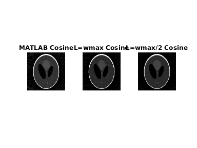
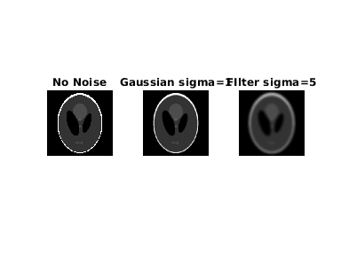
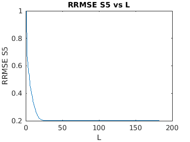

m = double(imread('../../data/SheppLogan256.png'));
theta = 0:3:177;
R = radon(m,theta);
fprintf('\n');
fprintf('\n');
fprintf('\n');
fprintf('\n');
fprintf('\n');
fprintf('\n');
wmax = 1;
new = iradon(R,theta,'linear','None',1,size(m,1));
figure(1);
subplot(1,3,1);
imshow(m,[]);
title('original image');
subplot(1,3,2);
imshow(R,[]);
title('Radon Transform');
subplot(1,3,3);
imshow(new,[]);
title('iradon without filter parameters');
m = double(m);
L = wmax;
ift_R = myFilter(R,'Ram-Lak',theta,L);
backprojected_1_rml = iradon(ift_R,theta,'linear','None',1,size(m,1));
L = wmax/2;
ift_R = myFilter(R,'Ram-Lak',theta,L);
backprojected_2_rml = iradon(ift_R,theta,'linear','None',1,size(m,1));
radon_new = iradon(R,theta,'linear','Ram-Lak',1,size(m,1));
figure(2);
subplot(1,3,1);
imshow(uint8(radon_new));
title('MATLAB Ram-Lak');
subplot(1,3,2);
imshow(uint8(backprojected_1_rml));
title('L=wmax RamLak');
subplot(1,3,3);
imshow(uint8(backprojected_2_rml));
title('L=wmax/2 RamLak');
rrmse_orig = rrmse(m,radon_new);
rrmse_rl_1 = rrmse(m,backprojected_1_rml);
rrmse_rl_2 = rrmse(m,backprojected_2_rml);
L = wmax;
ift_R_2 = myFilter(R,'SheppLogan',theta,L);
backprojected_1_sl = iradon(ift_R_2,theta,'linear','None',1,size(m,1));
L = wmax/2;
ift_R_2 = myFilter(R,'SheppLogan',theta,L);
backprojected_2_sl = iradon(ift_R_2,theta,'linear','None',1,size(m,1));
radon_new = iradon(R,theta,'linear','Shepp-Logan',1,size(m,1));
figure(3);
subplot(1,3,1);
imshow(uint8(radon_new));
title('MATLAB SheppLogan');
subplot(1,3,2);
imshow(uint8(backprojected_1_sl));
title('L=wmax Shepp');
subplot(1,3,3);
imshow(uint8(backprojected_2_sl));
title('L=wmax/2 Shepp');
rrmse_orig_shepp = rrmse(m,radon_new);
rrmse_shepp_1 = rrmse(m,backprojected_1_sl);
rrmse_shepp_2 = rrmse(m,backprojected_2_sl);
L = wmax;
ift_R_3 = myFilter(R,'Cosine',theta,L);
backprojected_1_cos = iradon(ift_R_3,theta,'linear','None',1,size(m,1));
L = wmax/2;
ift_R_3 = myFilter(R,'Cosine',theta,L);
backprojected_2_cos = iradon(ift_R_3,theta,'linear','None',1,size(m,1));
radon_new = iradon(R,theta,'linear','Cosine',1,size(m,1));
figure(4);
subplot(1,3,1);
imshow(uint8(radon_new));
title('MATLAB Cosine');
subplot(1,3,2);
imshow(uint8(backprojected_1_cos));
title('L=wmax Cosine');
subplot(1,3,3);
imshow(uint8(backprojected_2_cos));
title('L=wmax/2 Cosine');
rrmse_orig_cosine = rrmse(m,radon_new);
rrmse_cos_1 = rrmse(m,backprojected_1_cos);
rrmse_cos_2 = rrmse(m,backprojected_2_cos);
L = wmax;
S0 = m;
S1 = imgaussfilt(S0,1);
S5 = imgaussfilt(S0,5);
figure(5);
subplot(1,3,1);
imshow(uint8(S0));
title('No Noise');
subplot(1,3,2);
imshow(uint8(S1));
title('Gaussian sigma=1');
subplot(1,3,3);
imshow(uint8(S5));
title('FIlter sigma=5');
S0_radon = radon(S0,theta);
S1_radon = radon(S1,theta);
S5_radon = radon(S5,theta);
ift_S0 = myFilter(S0_radon,'Ram-Lak',theta,L);
ift_S1 = myFilter(S1_radon,'Ram-Lak',theta,L);
ift_S5 = myFilter(S5_radon,'Ram-Lak',theta,L);
recons_S0 = iradon(ift_S0,theta,'linear','None',1,size(S0,1));
recons_S1 = iradon(ift_S1,theta,'linear','None',1,size(S1,1));
recons_S5 = iradon(ift_S5,theta,'linear','None',1,size(S5,1));
figure(6);
subplot(1,3,1);
imshow(uint8(recons_S0));
title('Reconstructed S0');
subplot(1,3,2);
imshow(uint8(recons_S1));
title('Reconstructed S1');
subplot(1,3,3);
imshow(uint8(recons_S5));
title('Reconstructed S5');
rrmse_S0 = rrmse(S0,recons_S0);
rrmse_S1 = rrmse(S1,recons_S1);
rrmse_S5 = rrmse(S5,recons_S5);
new_size = size(R,1);
ws = linspace(0,1,new_size/2);
rrmse_S0_vec = [];
rrmse_S1_vec = [];
rrmse_S5_vec = [];
for L=ws
ift_S0 = myFilter(S0_radon,'Ram-Lak',theta,L);
ift_S1 = myFilter(S1_radon,'Ram-Lak',theta,L);
ift_S5 = myFilter(S5_radon,'Ram-Lak',theta,L);
recons_S0 = iradon(ift_S0,theta,'linear','None',1,size(S0,1));
recons_S1 = iradon(ift_S1,theta,'linear','None',1,size(S1,1));
recons_S5 = iradon(ift_S5,theta,'linear','None',1,size(S5,1));
rrmse_S0 = rrmse(S0,recons_S0);
rrmse_S1 = rrmse(S1,recons_S1);
rrmse_S5 = rrmse(S5,recons_S5);
rrmse_S0_vec = [rrmse_S0_vec rrmse_S0];
rrmse_S1_vec = [rrmse_S1_vec rrmse_S1];
rrmse_S5_vec = [rrmse_S5_vec rrmse_S5];
end
figure(7);
plot(rrmse_S0_vec');
title('RRMSE S0 vs L');
xlabel('L');
ylabel('RRMSE S0');
figure(8);
plot(rrmse_S1_vec');
title('RRMSE S1 vs L');
xlabel('L');
ylabel('RRMSE S1');
figure(9);
plot(rrmse_S5_vec');
title('RRMSE S5 vs L');
xlabel('L');
ylabel('RRMSE S5');
 

